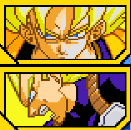

Goku et Piccolo affronte Vegeta pour protéger la Terre. Débloque la compétence "Kaioken" et l'attaque combineée avec Piccolo "Attaque Feintée".


Combat contre Freezer sur Namek en Super Saiyan. Débloque Freezer comme personnage jouable après le combat.


Affrontez le Docteur Gero avec Trunks après la défaite contre Freezer. Débloque la compétence Ultime "Kaioken X20"


Et si Goku avait utilisé le Kaioken X20 face Gero ? Affrontement face à Broly le Super Saiyan Légendaire. Débloque Broly comme personnage jouable.

Terminer le combat contre le Docteur Gero en faisant un Ultimate KO .


Goku affronte Cooler et son Escadron

Terminer le combat contre le Docteur Gero en faisant un Ultimate KO .

Goku affronte Metal Cooler. Débloque Goku Super Saiyan

Terminer le combat contre Cooler.


Goku affronte Cell. Débloque la capacité "Transmission Instantanée".

Terminer le combat contre Gero

Goku part dans l'Autre Monde et participe au Tournoi de l'Autre Monde, il y rencontre Bardock et les deux Saiyans affrontent Cell et Mecha Freezer, le tout sans savoir que les deux sont père et fils. Débloque Bardock comme personnage support

Terminer le combat contre Cell, sans utiliser Gohan


Goku apprend que Bardock et son père et discute avec lui. Après cela Goku entame un dur entraînement face à lui même.

Terminer le combat contre Mecha Freezer et Cell

Affrontez Vegeta controlé par Babidi et Boo.

Terminer le combat contre Cell

Affrontez Buu (Mauvais). Débloque l’attaque combinée avec Vegeta (Super Saiyan) nommée "Super épée Bagit".

Terminer le combat contre Majin Vegeta


Affrontez Buu (Mauvais) Pour sauver l'Univers. Débloque l’attaque combinée avec M Satan nommée "Super Genkidama".
Terminer le combat contre Majin Vegeta

Affrontez Buu (Mauvais) Pour sauver l'Univers. Débloque l’attaque combinée avec M Satan nommée "Super Genkidama".

Terminer le combat contre Majin Vegeta
Affrontez Buu (Mauvais) Pour sauver l'Univers. Débloque l’attaque combinée avec M Satan nommée "Super Genkidama".

Terminer le combat contre Majin Vegeta